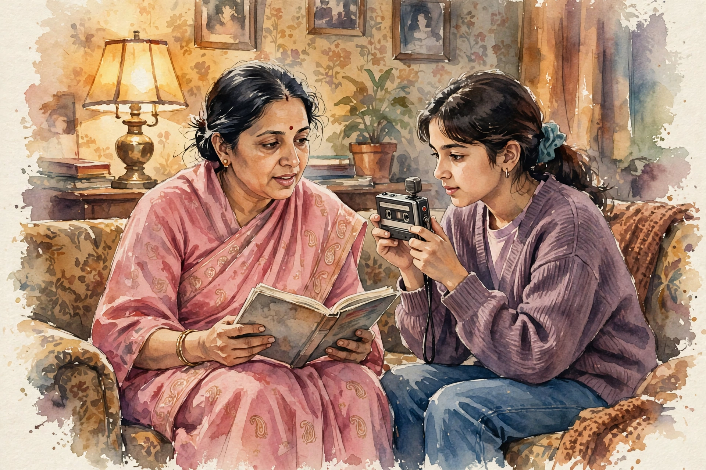
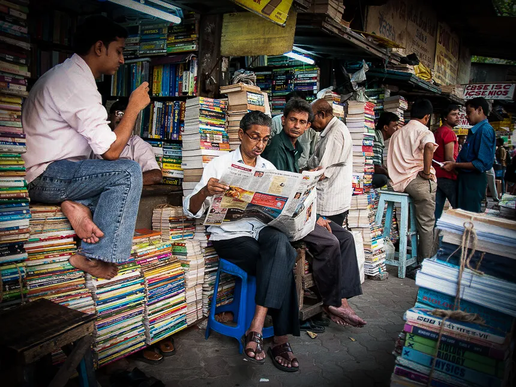

Conversations with Tyler · Episode companion
Jhumpa Lahiri on Writing, Translation, and Crossing Between Cultures
Recorded at George Mason University in January 2017, this is the most literary episode of the series: a Pulitzer winner on Rhode Island, Bengali tapes, Kolkata, Palladio, the Italian language, book covers, and why translation is the most intimate form of reading.
~00:00
Uncomfortably
Cowen opens with a framing. In her work, Lahiri circles the same absence: no native country, no language clearly her own, no settled culture. Having read all of her work, he would call her a Rhode Islander, where she grew up from age three to eighteen. Her answer is one word:
Uncomfortably.
Jhumpa Lahiri · ~00:01
She softens it with respect and confirms the facts, fifteen years in Rhode Island, then Barnard at eighteen, as many years since in New York. Childhood is formative in a way later years are not, so Rhode Island is part of who she is. But the relationship was always uneasy. For the anthology State by State she finally wrote about Rhode Island, partly to get over that discomfort, and the essay unlocked something: The Lowland became the first of her books in which she could name Rhode Island by its name. The earlier books were set in a fake Rhode Island, a suburb of Boston that was really Rhode Island. She could not say it out loud until then.
~00:04
At fifteen
Cowen asks what she read at fifteen. Russian literature came first: visiting a family friend's older daughter, she saw the big Norton Critical Editions of Dostoyevsky and Tolstoy on the desk and wanted to rise to that level. She loved Hawthorne even then, read The Great Gatsby in tenth grade, and met Hardy the following year. High school gave her the authors who stayed with her for life.
~00:06
Every novel an immigrant novel
Cowen offers a reading: The Scarlet Letter as a novel of immigrants, people who would not behave that way in a home country. Tess as a kind of immigrant novel too, a country girl in a strange place. Lahiri agrees, and widens the claim. What she responds to in literature is displacement itself, and she finds it everywhere: Willa Cather, Homer, almost any author.
Years earlier the New York Times Book Review asked her about her problem with immigrant literature, and she made what sounded like a cheeky remark: she did not believe in it. She meant it. The response to displacement is what drew her to writers from the start, and without it there would be a barrier between their times and hers. Literature does the opposite of building barriers. It lets readers cross over them.
~00:08
The tapes
Cowen notes that for one of her three master's degrees she translated six Bengali short stories by Ashapoorna Devi, perhaps the most famous Bengali woman writer of the twentieth century. The connection ran through her mother, a devoted reader who read almost entirely in Bengali. Lahiri remembers the drama of the book runs: her mother's list handed to an uncle, the booksellers of College Street in Kolkata, the waiting, the rickshaw ride home with the piled books. Those books were her mother's lifeline, simply unavailable in the United States.
The translation itself was a workaround. Lahiri could not read Bengali script and still barely can. She asked her mother to read the stories aloud, taped her, and played the tapes back again and again, translating from the voice. She could read the text painstakingly enough to check the structure, and she even caught her mother skipping a paragraph here and there.


The translation chain
How six Bengali stories reached English, as Lahiri describes it.
~00:12
Architecture of stories
Cowen notices that Ashapoorna Devi sets her stories in architectural space, always describing the home before the scene, and wonders if Lahiri learned that from her. She thinks the lens was already hers: in her thesis commentary she had read Devi as a writer attuned to physical space, and she surely absorbed it. Her doctoral dissertation extended the habit, studying Jacobean English drama and its settings, often a corrupt Italian palazzo, and what the setting meant.
~00:13
Palladio
They are at George Mason University, near Gunston Hall, one of the best-known examples of Palladian architecture in Virginia. What drew a literature student to Palladianism? A graduate seminar with Roger Scruton, who spoke about the language of architecture, Italian architecture in particular. The idea of looking at space so carefully, and the vocabulary implicit in it, struck her. Then came her first trip to Italy, and to Florence, where she walked through the buildings she had only seen in slides.
The dissertation asked why Renaissance England set its political dramas on Italian soil. Part of the answer was fear: Italy as a symbol of corruption. Lahiri calls the English attitude a love-horror, a contradictory pull of attraction and repulsion. And underneath it all, translation: English travelers bringing Vitruvius and Alberti home and literally building England out of Italian ideas.
~00:18
Mr. Kapasi
Cowen proposes that Mr. Kapasi, the interpreter of maladies who translates Gujarati symptoms for the doctor, is Lahiri's stand-in: the author as interpreter of disconnection. She says probably, though she was not aware of it at the time. The title came to her in a strange flash.
Looking back, the pattern is clear. In Latin, the word for translator is interpreter. She now teaches translation and tells her students that translation is the most intimate form of reading. There was a time when translating, interpreting, and analyzing were all one activity. Her first book and her new life as a translator belong to one continuum, visible only in retrospect.
~00:20
Ferrante
Cowen sees Elena Ferrante in Interpreter of Maladies, written before Lahiri could have read her: the need to set everything right for everyone, the inability to do it, the sadness, and books everywhere, powerful and impotent at once. Lahiri recognized the kinship when she finally read Ferrante and wrote her two public letters, read aloud in Rome. Ferrante wrote back.
What struck her: books are characters in Ferrante's work. Her novels are about reading and language at a deep, sophisticated level, about how books shape and form us and how they betray us, unable to contain what life is. Lahiri does not think her own work does this, but she thinks about it constantly.
~00:23
Darker
Is the work moving toward reconciliation, or toward Hardy and darkness? Darker, she says. That is usually what happens as we get older. The vision has grown less forgiving, less tolerant, less bittersweet and more simply bitter. And that is fine.
Her editor once told her The Lowland was really grim sometimes. They share a love of Hardy, so Lahiri answered: would you really have said that to Hardy? The editor said nothing more, and Lahiri published the book she wanted to publish. Many readers told her they could not finish it, that it was too heavy, too dark. They missed the bittersweet quality of The Namesake.
The arc of the work, in her telling
Stylized summary of her own account. Not a measurement.
~00:25
Kolkata
Cowen always tells visitors to India that they must go to Kolkata. Why? Because it is one of the most fascinating places on earth, she says, a city like no other, with a cultural life and a history utterly its own. Its beauty is not conventional. Parts of it can be beautiful, but not in the expected sense, and it challenges on every level.
She does not know it as a tourist. Her family is from there, and she has known it only through grandparents, aunts, uncles, cousins. It is like not knowing New York in the American context: its own thing, strong in flavor, power, and energy, something that has to be reckoned with.
~00:26
The intelligentsia
Why do so many of India's great minds, Amartya Sen and Abhijit Banerjee among them, come from Bengal? Lahiri dislikes sweeping generalizations and does not believe in them. But Kolkata is a city that believes in its poets, believes in its politics, believes in humanity. Life there is extreme, people are constantly put to the test, and nothing can be taken for granted. It is a jolt to the consciousness, fundamental and essential.
~00:30
Partition
Cowen asks about the 1905 partition of Bengal by Curzon, and whether the severing of West Bengal from Bangladesh carries emotional weight for her. Her relationship with Indian history has two layers. Raised in America, she studied none of it. India was not on any map. But her family talked constantly about their country, and she absorbed the trauma secondhand, especially the Partition, which scarred her father's family and the neighborhood he grew up in.
One story in Interpreter of Maladies, When Mr. Pirzada Came to Dine, grew from a vague childhood memory of a Bangladeshi scholar living in Rhode Island in the 1970s during the civil war. As a teenager she began filling in the pieces. On top of the facts sits the residue: relatives still deeply scarred, still hostile toward East Bengal and Muslims. Her daughter is named Noor, a Persian name, and family members questioned the choice. The hatred and prejudice, she says, are still in the family's kitchen, at the dinner table. Her parents taught her to be free of those attitudes, though she notes it is easier to say when you did not lose the ancestral property yourself.
~00:35
Tagore
Rabindranath Tagore, the towering figure of Bengali intellectual life, is like a member of the family. He is in a pantheon, though he is not a god, he is a person. Her parents were not religious but taught the children to respect great minds, and Tagore is one. Portraits of him covered the walls of her childhood home. She keeps a watercolor by her uncle and a photograph of Tagore's last public speech, taken by her grandfather's brother, a press photographer, beside her while she writes.
The limitation is her Bengali. She has read him mostly in translation, fiction and poetry, and grew up hearing his songs twenty-four hours a day. She is not aware of any conscious influence. But what is conscious and what is unconscious?
~00:38
In Other Words
Cowen calls In Other Words, her memoir of learning Italian and writing in it, a remarkably brave thing to do. Then he names lesser-known Italian writers. Lalla Romano: Lahiri had never heard of her until Rome, read a newspaper article, chased the books through the author's husband, who kept a warehouse of them in the house in Milan, and finally visited, saw her desk, her paintings, and received a cart full of books.
Romano wrote Nei mari estremi, a two-part memoir of losing her husband, written long before grief memoirs became a genre. Near the end of her life, nearly blind, she wrote a sentence or two a day on enormous sheets of paper. The fragments were collected as The Last Diary. One reads, in Italian, that her near-blindness is a point of view:
My blindness is a point of view.
Lalla Romano, via Lahiri · ~00:41
Lahiri says the line explained her Italian project to her. She is not totally blind in Italian, but she feels partially blind. Romano's blindness was imposed and suffered. Lahiri's is voluntary. But it is a voluntary blindness all the same, and it makes the writer look harder:
Well, it makes you look harder.
Jhumpa Lahiri · ~00:43
~00:44
Pavese
Cesare Pavese is huge for her. He translated Moby-Dick into Italian. Sailing the Aeolian Islands, her skipper told her that Pavese's translation surpasses Melville, a claim she has not yet tested. Pavese wrote in an autobiographical vein after the war, suffered deeply, and left behind an extraordinarily dark and true writer's notebook.
The deeper point is about what translation did to his Italian. Influenced by translating Melville, Pavese's Italian carries a different energy. That exchange, English feeding Italian through the translator's hand, is what American literature now lacks. Poets still do it, Pound, Merwin, Strand, but few fiction writers engage with translation as part of the creative work. Translating her first novel from Italian, she felt the formative power of it herself: a deepened awareness of what words are.
~00:49
Kristof
Agota Kristof fled Hungary during the invasion with her small children, her husband, and her dictionaries, and taught herself to write in French. Lahiri read her in Italian translation and was never the same. Kristof is deeply inspiring because of the lifelong effort to express herself in a learned language, and because she always had an antagonistic relationship with French, which she needed in Switzerland.
The contrast with Lahiri's own project is sharp. Kristof's French was a necessity she resented. Lahiri's Italian is a voluntary act everyone discourages. She calls it a crazy thing to do, and does it anyway.
~00:51
The Clothing of Books
Her most recent book is an essay about book covers. Cowen describes his own experiment: buying a novel at Borders based on the cover alone, ignoring everything else, and landing on a good book. Are covers assigned efficiently? Lahiri has never tried the experiment. The essay is really about the disconnect between outside and inside, and what that feels like to the writer: anguish, because you cannot fully disconnect yourself from what you look like.
Cowen admits he cannot shake the cover of Unaccustomed Earth from his reading, even knowing she did not choose it. She points to her bracelet: the cover was designed after it. Pretty, perhaps too pretty.
On blurbs, she says what she feels in the essay, to some publishers' discomfort. Writing in Italian changed her: she does not pretend anymore, and she is not concerned about making everybody happy. Once the cover is on, she writes, the book is not hers anymore. In Italy, authors often choose their own covers, and she envies that wholeness: the words, the pages, and an image the author wanted.
~00:58
The uniform
Cowen shows her a German Reclam edition of Rilke: plain, just a color, shelved by publisher. She loves them and would opt in for all her books. The essay meditates on the uniform versus dressing yourself, the contradictory approaches to how you present who you are.
A cover forces a statement about identity when she would rather hover in ambiguity. The uniform has a protective quality, a lack of specificity, a belonging to the series. The essay begins with a childhood trauma: having to dress herself, choosing clothes, the anguish of it. She envied her cousins' school uniforms in Kolkata, dreaming of a blue skirt, white shirt, and black shoes that nobody would comment on.
America is Freedom with a capital F, and there is danger in it. As a child of immigrants she knew what it meant to shop in one store rather than another, to watch classmates' Nikes while her parents called them a waste of money. Where do you stand between wanting to express yourself and being afraid of that freedom?
~01:04
Music and next work
What does she love most in Indian classical music? From her mother she inherited sitar music, and from the wider family a passion for the sarod, the instrument of Ali Akbar Khan and Amjad Ali Khan. She grew up inside that complex, beautiful music. Days earlier, at the Princeton art museum, she listened to ragas through headphones in a gallery of miniatures inspired by the raga cycles. That music is part of her formation.
Next: she has just finished translating Ties, Domenico Starnone's novel Lacci, due out in March, by the man she considers the finest living Italian author. And she is slowly, quietly writing very short stories in Italian.
Three languages, three relationships
Her own account of Bengali, English, and Italian.
~01:07
Ferrante's anonymity
An audience member asks about the unmasking of Elena Ferrante. Lahiri calls the whole situation blown out of proportion and ridiculous. She personally knows the woman accused of being Ferrante, the wife of Domenico Starnone, who was accused too. Whoever wrote the books did nothing wrong, yet it was treated almost as a crime. The article's language disturbed and offended her.
The world is no better off knowing the name. The cult of the individual hand behind the work is a recent concept. In Italy, people moved on. In America the speculation will not die. If a writer asks to write in anonymity, why can that not be respected?
~01:11
Bilingual souls
A bilingual writer in the audience asks whether she feels like one person in two worlds or two different people. Lahiri says anyone with more than one language recognizes the split. Some say that with more than one language you have more than one soul:
If you know more than one language, you have more than one soul.
A saying quoted by Lahiri · ~01:11
Each language is a vast universe. Even before Italian, she grew up with two languages side by side, both strong influences, so she was always divided in that sense. The Italian project adds a new point of view and a freedom: a learned language lets you set aside baggage. In her telling, In Other Words belongs to Italian alone. English could not carry it, nor the book-covers essay either.
~01:13
Gogol's face
Was it a conscious choice to make Gogol, in The Namesake, olive-toned enough to pass as Mediterranean? Not really, she says. Someone in the book says he could be Spanish, but that is about projection: how we project sameness onto others to make them comfortable and dilute the difference. It connects to the covers essay. She showed the Italian cover of In Other Words to another publisher and read the expression on his face. The heart of the matter is the refusal to recognize ourselves in the other.
~01:17
The parents
Did she ever have deep conversations with her parents about the immigrant experience, or did she infer it? She lived it. That was her whole life, every relationship outside the family informed by the awareness of where her parents came from. She never sat down to ask, because she saw the effects daily: what it means to live away from your point of reference, minute by minute.
That was my whole life.
Jhumpa Lahiri · ~01:17
It was like being a simultaneous interpreter all the time. Of course it is not ironic that her book is called The Interpreter of Maladies. But the interpreting was not for her parents. It was for herself.
~01:19
Fear
More inhibited or less, compared to when she began? Writing always scares and intimidates her, and if it ever stopped, she probably should not write anymore. Now there is the formal challenge of a language she does not fully control, and it intimidates her. But the unease predates Italian. She does not want to lose touch with it, or to feel confident, because the work is an investigation, an experiment, a challenge. It cannot be undertaken in the spirit of assuming you can do it. You have to question it at every step.
~01:21
The Exchange
Which character is most like her? There are pieces of her in many, concealed and rearranged. But the most explicitly autobiographical story she ever wrote is the first story she wrote in Italian, The Exchange, published in In Other Words: a weird, abstract story lifted almost directly from something that happened to her. On Kristof, the oracle of all of this: she knows what it means to create out of life, and the fluid, mysterious boundary between real life and art.
On process: she is glad the prose reads as restrained, but she writes about loss, not nostalgia. And she does not write the perfect sentence first. She goes through a million drafts, constantly reworking everything. The linear ideal is the opposite of how she works.
The method, in her words
Her answer to the process question, stylized.
~01:24
Watch the episode
The full conversation runs about 85 minutes, recorded before a live audience at George Mason University on January 11, 2017. The transcript carries no timestamps. The times in this companion are proportional estimates from each passage's position in the transcript.
Nuggets of wisdom
- Answer a reductive framing with one word: Uncomfortably.
- Every novel is an immigrant novel if you read for displacement.
- Reading at its most intimate is translation.
- In Latin, translator and interpreter are the same word.
- You cannot see the patterns while living them. Only looking back reveals them.
- Books shape us and betray us. They cannot contain what life is.
- The vision gets less forgiving with age. That is fine.
- Kolkata's beauty is not conventional.
- A city that believes in its poets believes in humanity.
- Partial blindness makes you look harder.
- A learned language lets you set aside baggage.
- The uniform protects. Freedom terrifies.
- Once the cover is on, the book is no longer the writer's.
- Writing should scare you. Never get comfortable.
- Loss, not nostalgia, is the core.
- A million drafts. Never the perfect sentence first.
- Living the immigrant experience beats asking about it.
- More than one language, more than one soul.
- Refuse the cult of the author's signature.
- The most autobiographical story can arrive in a borrowed tongue.